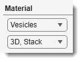
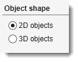
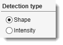
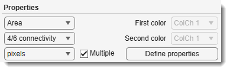
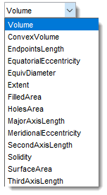
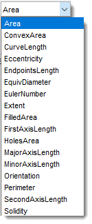
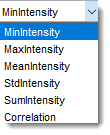

Quantification for Mask or Model Objects¶
Overview¶
This dialog provides access to quantify properties for shapes and intensities of model and mask 2D or 3D objects.
Workflow in a nutshell¶

- Select material or mask in the Material section
- Define 2D or 3D shape of the objects to detect in the Object shape section
- Choose to detect object shapes or intensities in the Detection type section
- Select the property to quantify ()
Info
For multiple properties to quantify check
- Hit the button to start quantification
Material¶

Use the combo boxes to select the object source and the dataset extent:
- Object source (): choose Mask, Exterior, or any model material. For models with more than 255 materials a Model option is also listed, quantifying all materials at once.
- Dataset extent (): 2D, Slice (current slice), 3D, Stack (current Z-stack), or 4D, Dataset (whole volume).
Object shape¶

Select the dimensionality of the objects to detect:
- Shape2D — detects 2D objects on each slice independently.
- Shape3D — detects 3D connected objects across the stack.
Detection type¶

Choose what to measure:
- Object — statistics based on shape properties of the objects (see 3D properties and 2D properties below).
- Intensity — statistics based on image intensities inside the objects (see intensity properties below).
Properties¶

- : select the property to measure (see sections below for the full list).
Warning
EndpointsLength requires 1-pixel-wide lines with 8/26 connectivity.
- : defines how pixels/voxels are grouped into objects:
- 4/6 connectivity — combines pixels touching at North, West, South, East sides (2D) and also Top, Bottom (3D).
- 8/26 connectivity — same as 4/6, plus diagonal (45°) neighbours.
- : color channel for intensity analysis.
- : second color channel for correlation analysis.
- : pixels or physical units.
Warning
Some properties are pixel-only. MeridionalEccentricity, EquatorialEccentricity, MajorAxisLength, SecondAxisLength, ThirdAxisLength, EquivDiameter, and SurfaceArea for 3D objects in physical units require isotropic voxels.
- : enables measuring several properties in one run; click to choose the set.


- See below for details of quantification properties (2D shapes, 3D shapes, intensities)
- : starts quantification and populates the table.
Quantification table¶

The Quantification table displays the calculated values. Sort results with , or
- New selection / Add to selection / Remove from selection: create or modify the Selection layer from the highlighted rows.
- Copy column(s) to clipboard: copies the selected column(s) to the system clipboard.
- New annotations: places MIB annotations at the centroids of selected objects. A settings dialog lets you compose the label from a custom text string, the material name, and/or the object ID. Accessible afterwards via Ribbon → Model → Annotations → List of annotations or Segmentation panel → Segmentation tools → Annotations.
- Add to annotations: appends selected objects to the existing annotation list (same settings dialog).
- Remove from annotations: removes annotations at the selected object centroids.
- Calculate Mean / Sum / Min / Max: computes the statistic for column 2 of the highlighted rows and copies the result to the clipboard.
- Crop to a file/MATLAB: opens the Crop Objects dialog to export image patches cut around each detected object.
Details on Crop to a file/MATLAB

OutputName_ObjectId):
- .img: cropped image [height, width, colors, depth].
- .pixSize: pixel size struct (.x .y .z .t .units .tunits).
- .logText: crop coordinates string [y1:y2, x1:x2, :, z1:z2, t].
- .Model.model: cropped model/labels array.
- .Model.materials: cell array of material names.
- .Model.colors: material color matrix.
- .Mask: cropped mask array [height, width, depth].
Import back using:
- Ribbon → Home → Import image from... → MATLAB (fields: varname.img, varname.pixSize).
- Ribbon → Model → Import model from MATLAB (field: varname.Model).
- Objects to a new model: generates a new model assigning each selected object a unique material index. Demo
-
Plot histogram: opens a MATLAB figure with a bar histogram of the selected values (prompts for number of bins).
-
: exports the full results table.
Export formats
- Export to MATLAB — saves the STATS struct to the MATLAB workspace under a user-defined variable name.
- Excel format (*.xls) — Microsoft Excel format.
- Comma-separated values (*.csv) — comma-separated text.
- MATLAB format (*.mat) — standard MATLAB format, including
.PixelIdxListand.BoundingBoxfields. - MATLAB format minimalistic (*.mat) — standard MATLAB format, excluding
.PixelIdxListand.BoundingBoxfields.
Histogram and object selection¶

The Histogram shows the distribution of values in the table, with linear or logarithmic Y-axis (via ).
Use
- : instantly highlights the clicked objects in the Image View panel. Ctrl +
deselects an object. - : changes table sort order.
- + : select all objects whose value falls within the specified min–max range.
- The Details panel: defines the selection action — add, remove, or replace the Selection layer.
Quantification properties of 3D objects¶

- Volume: total voxels (~volume) within 3D objects.
- ConvexVolume: total voxels of the smallest convex hull enclosing the 3D object.
- EndpointsLength: distance between endpoints of 1-pixel-wide lines (use Membrane ClickTracker with Straight line, Width=1). Calculated in image units.
- EquatorialEccentricity: eccentricity of the cross-section through the second-longest and shortest axes (0 = sphere, 1 = line).
- EquivDiameter: diameter of a sphere with the same volume as the object.
- Extent: ratio of object voxels to bounding-box voxels.
- FilledArea: total voxels within the filled (hole-free) 3D object.
- HolesArea: total voxels of internal cavities within 3D objects.
- MajorAxisLength: length of the major principal axis in pixels (see the note below the list).
- MeridionalEccentricity: eccentricity of the cross-section through the longest and shortest axes.
- SecondAxisLength: length of the second principal axis in pixels (see the note below the list).
- Solidity: proportion of convex-hull voxels occupied by the object (Volume / ConvexVolume).
- SurfaceArea: surface area of the 3D object (requires isotropic voxels for physical units).
- ThirdAxisLength: length of the minor (third) principal axis in pixels (see the note below the list).
What MajorAxisLength, SecondAxisLength and ThirdAxisLength measure
The object's own longest direction is found first (the direction along which its voxels are most spread out), then the object is measured along that direction, from the centre of one extreme voxel to the centre of the other. SecondAxisLength and ThirdAxisLength are the same measurement along the two remaining perpendicular directions.
A solid 10 × 4 × 4 voxel cuboid gives MajorAxisLength = 9, with SecondAxisLength = ThirdAxisLength = 3: a run of N voxels measures N-1, because that is the distance between the extreme voxel centres. Rotating the cuboid does not change the result, the axis follows the object.
This is a direct measurement of the object rather than a fitted shape. MATLAB regionprops3
reports 12.91 for the same cuboid, because its PrincipalAxisLength is the axis of an equivalent
ellipsoid. The 2D MajorAxisLength listed below is an ellipse fit as well; the 3D property is not.
Worth knowing:
- A near-spherical or near-cubic object has no dominant direction, so the axis that gets picked, and with it the reported length, is arbitrary.
- For a bent object the value is the straight-line spread, not the length measured along the object. Use EndpointsLength for that.
- A single-voxel object gives 0.
Quantification properties of 2D objects¶

- Area: total pixels within 2D objects.
- ConvexArea: total pixels of the smallest convex polygon containing the object.
- CurveLength: length of thinned curves (closed or open) in image units. Requires thinning (Ribbon → Selection → Morphological 2D/3D operations) and branch-point removal.
- Eccentricity: ratio of foci distance to major-axis length of the equivalent ellipse (0 = circle, 1 = line).
- EndpointsLength: distance between endpoints of 1-pixel-wide lines (use Membrane ClickTracker with Straight line, Width=1; thin with Brush size 1 or Ribbon → Selection → Morphological 2D/3D operations → Thin). Calculated in image units.
- EquivDiameter: diameter of a circle with the same area as the object (
sqrt(4*Area/pi)). - EulerNumber: number of objects minus number of holes (e.g., 1 hole → 0, 2 holes → -1).
- Extent: ratio of object pixels to bounding-box pixels (Area / bounding-box area).
- FilledArea: total pixels of the filled (hole-free) object.
- FirstAxisLength: actual length of the major 2D axis, measured on the object (see the note below the list).
- HolesArea: total pixels within holes.
- MajorAxisLength: length of the major axis of the equivalent-second-moment ellipse (pixels) (see the note below the list).
- MinorAxisLength: length of the minor axis of the equivalent-second-moment ellipse (pixels) (see the note below the list).
- Orientation: angle (−90° to +90°) between the x-axis and the major axis of the equivalent ellipse.
- Perimeter: boundary length (sum of distances between adjacent border pixels).
- SecondAxisLength: actual length of the minor 2D axis, measured on the object (see the note below the list).
- Solidity: proportion of convex-hull pixels occupied by the object (Area / ConvexArea).
MajorAxisLength / MinorAxisLength vs FirstAxisLength / SecondAxisLength
Both pairs describe the long and the short extent of a 2D object, but they are measured differently.
MajorAxisLength and MinorAxisLength are the axes of the equivalent ellipse, the ellipse that has the same second moments as the object. They describe an idealised stand-in for the object rather than the object itself, and they are the basis of Eccentricity and Orientation.
FirstAxisLength and SecondAxisLength are measured on the object: the direction along which its pixels are most spread out is found first, then the object is measured along that direction from the centre of one extreme pixel to the centre of the other, and the same is done perpendicular to it. The 3D MajorAxisLength above uses this definition too.
For a solid 10 × 4 pixel rectangle:
| long axis | short axis | |
|---|---|---|
| MajorAxisLength / MinorAxisLength (ellipse) | 11.55 | 4.62 |
| FirstAxisLength / SecondAxisLength (measured) | 9 | 3 |
The ellipse overshoots a rectangle by about 15%, while the measured pair reports N-1 for a run of N pixels, since it goes from pixel centre to pixel centre. For genuinely elliptical objects the two agree closely: a disk 21 pixels across gives 20.1 and 20.
Use the ellipse pair to compare elongation across objects of a similar shape, and the measured pair when the value should match the size seen on the screen. For a bent object neither reports the length along the object, use EndpointsLength or CurveLength instead.
Quantification properties of intensities of 2D/3D objects¶
Calculated when Intensity is selected in the Detection type section.

- MinIntensity: minimal image intensity within 2D/3D objects.
- MaxIntensity: maximal image intensity within 2D/3D objects.
- MeanIntensity: mean image intensity within 2D/3D objects.
- StdIntensity: standard deviation of image intensity within 2D/3D objects.
- SumIntensity: sum of image intensities within 2D/3D objects.
- Correlation: correlation between intensities of two selected color channels (see MATLAB's
corr2).
Back to MIB | User interface | Ribbon | Mask (Model)